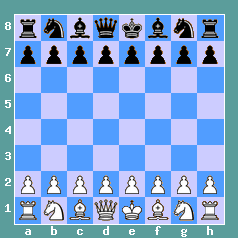

Un tablero de ajedrez es un cuadrado compuesto por 64 casillas o cuadros y por lo tanto cada lado del tablero tiene ocho casillas (8 x 8 = 64).
La mitad de las casillas son blancas, y la otra mitad, negras, y están dispuestas alternativamente, de modo que cada casilla blanca está rodeada por cuatro casillas negras y viceversa.
El tablero de ajedrez se coloca con una casilla blanca en la esquina derecha de la fila más cercana al jugador, y las piezas se sitúan como se muestra en el diagrama, con cada reina en la casilla de su propio color.

Bien: el rey y la dama están en su lugar.

Mal: el rey y la dama están cambiados de sitio.
Aunque dedicaremos un apartado a la notación algebraica es bueno que conozcamos ya la manera en que nos vamos a referir a cada casilla.
La notación algebraica se basa en un sistema de coordenadas de 8 x 8, nombrándose las columnas desde la letra "a" a la "h" y las filas del "1" al "8" como en el "juego de los barquitos".
La fila 1 es la más próxima al jugador blanco y la fila 8 es la más cercana al jugador negro, la columna "a" está a la izquierda del blanco y a la derecha del negro.
Es decir, el jugador de las negras ve el orden de las casillas al revés que el blanco, lo cual supone una complicación cuando cambiamos de color, pero con la ventaja de que cada casilla tiene el mismo nombre para ambos jugadores. Por ejemplo, la casilla e1, es donde se coloca el rey blanco al comienzo de la partida y mientras que el rey negro se coloca en e8.
Los jugadores avanzados no necesitan contar las filas y columnas, por ejemplo al decir e4 no tienen que pensar que es la cuarta fila de la quinta columna, sino es simplemente la casilla de la apertura típica de peón de rey. Con el tiempo aprenderás que cada casilla tiene su personalidad y propiedades y te será más sencillo encontrarlas.
|
Columnas
Se llama columna a cada franja de ocho casillas que recorre el tablero en sentido vertical. Así que el tablero tiene ocho columnas y cada columna contiene cuatro casillas blancas y cuatro negras.
|
|
Filas
Cada franja de ocho casillas que recorre el tablero en sentido horizontal se llama fila. El tablero tiene ocho filas, y en cada fila hay cuatro casillas blancas y cuatro negras.. |
|
Diagonales
Una diagonal es un conjunto de casillas del mismo color, unidas por sus vértices y situadas en línea recta, que recorren el tablero en sentido oblicuo. Habrá, por lo tanto, diagonales blancas (es decir, con todas sus casillas blancas) y diagonales negras (con todas sus casillas negras). Mientras las columnas y filas se componían de un número fijo de casillas (ocho), en las diagonales el número de casillas es variable, con un máximo de ocho en la gran diagonal. |
|
Centro
Las columnas, filas y diagonales son elementos del tablero que están, como veremos más adelante, directamente relacionados con el movimiento de las piezas. Pero aparte de estos elementos puramente geométricos existen otros de carácter más bien estratégico. El más importante de estos últimos es el centro. Así se llama al área de las cuatro casillas centrales, y tiene un gran valor en la lucha, pues su dominio es fundamental. Conviene comprobar que el centro está formado por la intersección de las diagonales más largas (una blanca y otra negra), llamadas también diagonales principales. |
|
Bandas o bordes
Se denominan bandas o bordes las filas y columnas que están en contacto con el borde del tablero. Tienen gran importancia en los finales. |
|
Flancos
Si se traza una línea vertical por la mitad del tablero, éste queda dividido en dos mitades o flancos. Se llama flanco de rey al que contiene a los dos reyes al comienzo de la partida, y flanco de dama al que contiene a las damas. |